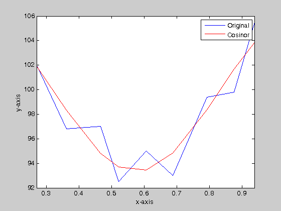
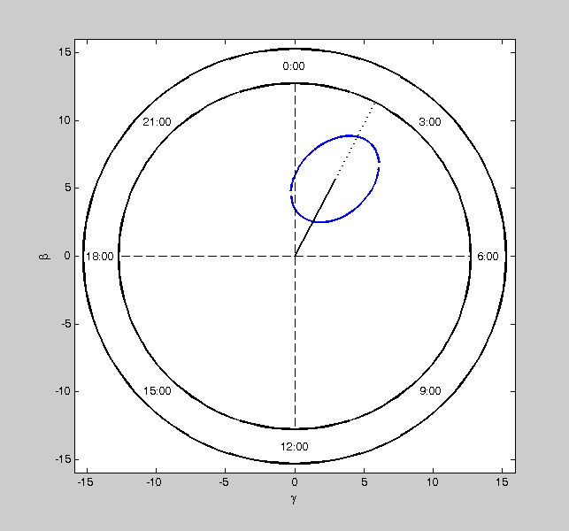

Contents
function [] = cosinor(t,y,w,alpha)
if nargin ~= 4
error('Incorrect number of inputs');
end
if length(t) < 4
error('There must be atleast four time measurements')
end
I. Parameter Estimation
n = length(t);
x = cos(w.*t);
z = sin(w.*t);
NE = [ n sum(x) sum(z) sum(y);
sum(x) sum(x.^2) sum(x.*z) sum(x.*y);
sum(z) sum(x.*z) sum(z.^2) sum(z.*y);];
RNE = rref(NE);
M = RNE(1,4); beta = RNE(2,4); gamma = RNE(3,4);
Amp = sqrt(beta^2 + gamma^2);
theta = atan(abs(gamma/beta));
a = sign(beta);
b = sign(gamma);
if (a == 1 || a == 0) && b == 1
phi = -theta;
elseif a == -1 && (b == 1 || b == 0)
phi = -pi + theta;
elseif (a == -1 || a == 0) && b == -1
phi = -pi - theta;
elseif a == 1 && (b == -1 || b == 0)
phi = -2*pi + theta;
end
disp('Parameters:'); disp('---------------');
fprintf(1,'Mesor = %g \nAmplitude = %g \nAcrophase = %g \n\n',M,Amp,phi);
f = M + Amp*cos(w.*t+phi);
figure('name','Cosinor Analysis: Original data and fitted function');
plot(t,y); hold on;
xlabel('x-axis');
ylabel('y-axis');
plot(t,f,'r');
legend('Original', 'Cosinor');
xlim([min(t) max(t)]);
Parameters:
---------------
Mesor = 99.727
Amplitude = 6.38383
Acrophase = -0.475419

II. Confidence Limtes for Single Cosinor
RSS = sum((y - (M + beta.*x + gamma.*z)).^2);
sigma = sqrt(RSS/(n-3));
X = 1/n * sum((x - mean(x)).^2);
Z = 1/n * sum((z - mean(z)).^2);
T = 1/n * sum((x - mean(x)).*(z - mean(z)));
CI_M = tinv(1-alpha/2,n-3)*sigma^2*sqrt(((sum(x.^2))*(sum(z.^2)) - (sum(x.*z))^2)/(n^3*(X*Z - T^2)));
[CI_Amp_min, CI_Amp_max, CI_phi_min, CI_phi_max] = CIcalc(X,T,Z,beta,gamma,n,sigma,Amp,phi,alpha);

III. Zero-amplitude test
p_3a = fpdf((n*(X*beta^2 + 2*T*beta*gamma + Z*gamma^2)/(2*sigma^2)),2,n-3);
fprintf(1,'Zero Amplitude Test \n')
fprintf(1,'------------------------------------------------------\n')
fprintf(1,'Amplitude 0.95 Confidence Limits P Value\n')
fprintf(1,'--------- ---------------------- -------\n')
fprintf(1,' %.2f (%.2f to %.2f) %g\n\n',Amp,CI_Amp_min,CI_Amp_max,p_3a)
Zero Amplitude Test
------------------------------------------------------
Amplitude 0.95 Confidence Limits P Value
--------- ---------------------- -------
6.38 (2.83 to 9.99) 0.000511379